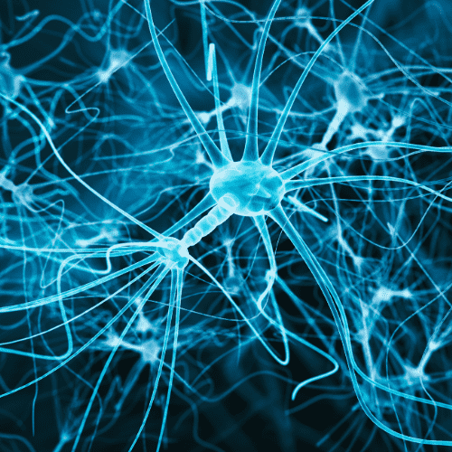

Mentes Conectadas. Explorando las redes neuronales que nos definen.
El cerebro humano es un universo de conexiones. Cada pensamiento, emoción o recuerdo es posible gracias a una inmensa red de neuronas que se activan e interconectan constantemente.
En nuestra obra, los puntos que trazan caminos efímeros imitan este mismo fenómeno: miles de conexiones que emergen, se cruzan, desaparecen o se fortalecen. Al hacer clic, el espectador se convierte en parte de este proceso, creando nuevas rutas, como lo haría un estímulo en el cerebro. Así, el arte se convierte en una representación viva de nuestra mente en acción.
Ver Obra
